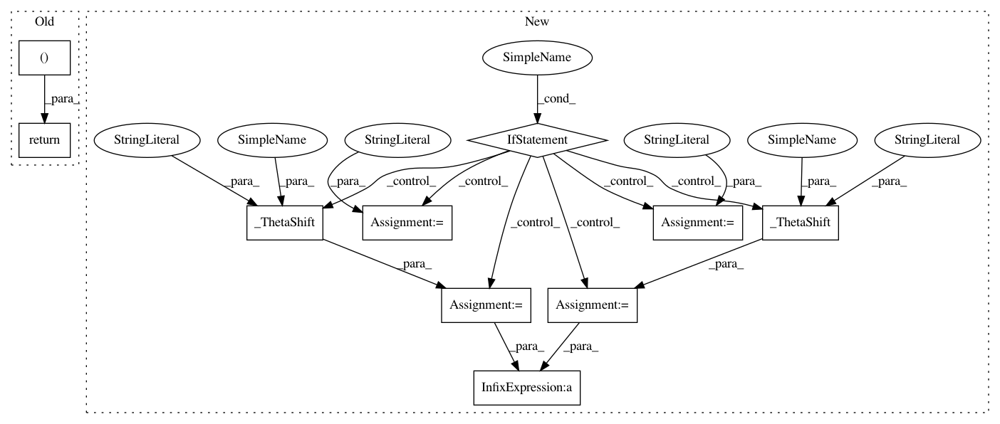

386bb303171ac6bfb9c49ffc23c307eb10f595c6,lib/matplotlib/projections/polar.py,PolarAxes,get_yaxis_text1_transform,#PolarAxes#Any#,747
Before Change
thetamin, thetamax = self._realViewLim.intervalx
full = _is_full_circle_rad(thetamin, thetamax)
if self.get_theta_direction() > 0 or full:
return self._yaxis_text_transform, "center", "left"
else:
return self._yaxis_text_transform, "center", "right"
def get_yaxis_text2_transform(self, pad):
After Change
def get_yaxis_text1_transform(self, pad):
thetamin, thetamax = self._realViewLim.intervalx
if _is_full_circle_rad(thetamin, thetamax):
halign = "left"
pad_shift = _ThetaShift(self, pad, "rlabel")
elif self.get_theta_direction() > 0:
halign = "left"
pad_shift = _ThetaShift(self, pad, "min")
else:
halign = "right"
pad_shift = _ThetaShift(self, pad, "max")
return self._yaxis_text_transform + pad_shift, "center", halign
def get_yaxis_text2_transform(self, pad):
if self.get_theta_direction() > 0:
In pattern: SUPERPATTERN
Frequency: 3
Non-data size: 10
Instances
Project Name: matplotlib/matplotlib
Commit Name: 386bb303171ac6bfb9c49ffc23c307eb10f595c6
Time: 2017-09-25
Author: quantum.analyst@gmail.com
File Name: lib/matplotlib/projections/polar.py
Class Name: PolarAxes
Method Name: get_yaxis_text1_transform
Project Name: matplotlib/matplotlib
Commit Name: 386bb303171ac6bfb9c49ffc23c307eb10f595c6
Time: 2017-09-25
Author: quantum.analyst@gmail.com
File Name: lib/matplotlib/projections/polar.py
Class Name: PolarAxes
Method Name: get_yaxis_text1_transform
Project Name: matplotlib/matplotlib
Commit Name: 386bb303171ac6bfb9c49ffc23c307eb10f595c6
Time: 2017-09-25
Author: quantum.analyst@gmail.com
File Name: lib/matplotlib/projections/polar.py
Class Name: PolarAxes
Method Name: get_yaxis_text2_transform
Project Name: matplotlib/matplotlib
Commit Name: 6889c6dbf8511382250bea9a5a36ceb0e1912f01
Time: 2017-09-25
Author: tcaswell@gmail.com
File Name: lib/matplotlib/projections/polar.py
Class Name: PolarAxes
Method Name: get_yaxis_text1_transform